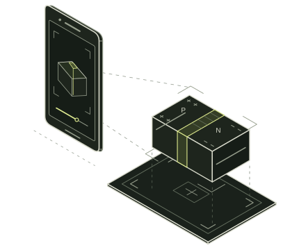

Change the voltage. Follow the charges.
Explore the junction at your own pace.

Change the voltage. Follow the charges.
Explore the junction at your own pace.

Place the junction on your desk.
Slide the voltage. Watch depletion widen.
